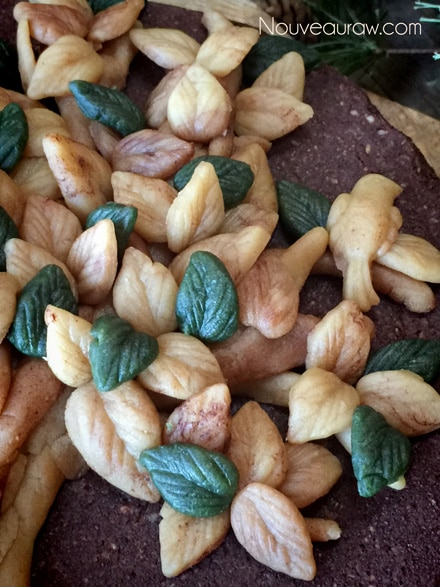

To make the leaves, I used a mold that I bought at Michael’s Craft store. Here is a similar one to mine which can be purchased through Amazon. It’s one that cake bakers use with their fondant. I just pressed the dough into the mold, cleaned up the edges, and popped it out. Very very easy. The only problem I had was knowing when to stop. lol
The tan parts that show through is just the almond dough. To get the brown in for depth and shadowing, I sprinkled some raw cacao on the counter and would just swipe a piece of dough in, getting a dusting of brown on it. I thought it worked out perfectly, giving the leaves and the trunk of the tree some variation in color.
For the green leaves, I used a natural green food coloring that I had in my pantry. In a pinch you could use spirulina or spinach… just watch that you don’t overwhelm the dough with those flavors.
Raw marzipan:
- 2 cups fine almond flour
- 6 Tbsp maple syrup
- 1 tsp vanilla or maple extract
Coloring:
- Raw cacao powder
- All natural green food coloring
Preparation:
Cake ingredients:
- Place the dates in a bowl and add enough warm water to cover them. Soak for 15 minutes
- This will soften the dates, making them easier to blend into the cake batter.
- After the dates are done soaking, drain, and discard the soak water. Squeeze the excess water from them before adding to the batter.
- Place the nuts in the food processor, fitted with the “S” blade. Process to a fine crumble.
- Add the cacao, espresso powder, salt, and pepper. Pulse together.
- Remove the lid of the processor and sprinkle the dates around the bowl, along with the sweetener, coconut amino, and vanilla. Process until the ingredients create a ball as it spins around.
- Press the batter into a 7″ round pan.
- I recommend springform pans because cakes are easy to remove from them.
- Line the base with plastic wrap for ease of removal.
Raw marzipan:
- In the food processor, fitted with the “S” blade, combine the almond flour, sweetener, and vanilla. Process until the batter is smooth but be careful that you don’t process it too long… thus creating a nut butter.
Art Class:
- This is where you can add your own creativity. The marzipan is wonderful for creating different shapes. You can make them by hand, with molds, or even cookie cutters.
- Please read above on how I formed the tree and made the leaves.

I love you, sweet sister!